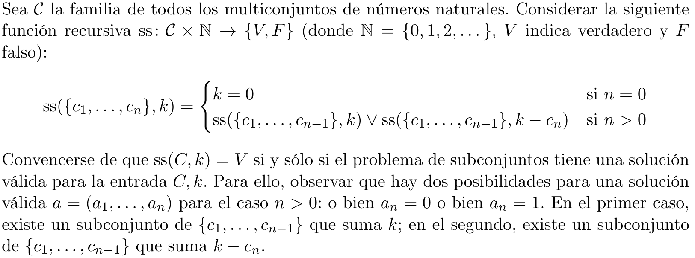

En este ejercicio vamos a resolver el problema de suma de subconjuntos con la técnica de back- tracking. Dado un multiconjunto \(C = \left\{ c_{1},...,c_{n} \right\}\) de números naturales y un natural \(k\), queremos determinar si existe un subconjunto de \(C\) cuya sumatoria sea \(k\). Vamos a suponer fuertemente que \(C\) está ordenado de alguna forma arbitraria pero conocida (i.e., \(C\) está implementado como la secuencia \(c_{1},...,c_{n}\) o, análogamente, tenemos un iterador de \(C\)). Las soluciones (candidatas) son los vectores \(a = \left( a_{1},...,a_{n} \right)\) de valores binarios; el subconjunto de \(C\) representado por \(a\) contiene a \(c_{i}\) si y sólo si \(a_{i} = 1\). Luego, a es una solución válida cuando \(\sum_{i = 1}^{n}a_{i}c_{i} = k\). Asimismo, una solución parcial es un vector \(p = \left( a_{1},...,a_{i} \right)\) de números binarios con \(0 \leq i \leq n\). Si \(i < n\), las soluciones sucesoras de \(p\) son \(p \oplus 0\) y \(p \oplus 1\), donde \(\oplus\) indica la concatenación.
Soluciones candidatas: \(\left\{ (0,0,0),(1,0,0),(0,1,0),(0,0,1),(1,1,0),(1,0,1),(0,1,1),(1,1,1) \right\}\) o sea, toda combinación posible.
Conjunto de soluciones válidas: \(\left\{ (1,0,1),(0,1,0) \right\}\)
Conjunto de soluciones parciales: \(\left\{ (),(1),(0),(0,0),(0,1),(1,0),(1,1) \right\}\)

Me convencí!
Convencerse de que la siguiente es una implementación recursiva de ss en un lenguaje imperativo y de que retorna la solución para \(C\), \(k\) cuando se llama con \(C,|C|,k\). ¿Cuál es su complejidad?
1) subset_sum(C, i, j): // implementa ss({c1, . . . , ci}, j)
2) Si i = 0, retornar (j = 0)
3) Si no, retornar subset_sum(C, i − 1, j) ∨ subset_sum(C, i − 1, j − C[i])
Me convencí, luego, su complejidad es tal que
2) es \(O(1)\)
3) Cada subset_sum se extiende a 2 llamadas recursivas por recursión, y hay \(|C|\) recursiones, luego tengo \(2^{|C|}\) llamadas, cada una de tamaño \(O(1)\) por lo que es \(O\left( 2^{|C|} \right)\)

Podemos notar que el árbol es análogo al de backtracking.
Considerar la siguiente regla de factibilidad : \(p = \left( a_{1},...,a_{i} \right)\) se puede extender a una solución válida sólo si \(\sum_{q = 1}^{i}a_{q}c_{q} \leq k\). Convencerse de que la siguiente implementación incluye la regla de factibilidad.
1) subset_sum(C, i, j): // implementa ss({c1, . . . , ci}, j)
2) Si j < 0, retornar falso // regla de factibilidad
3) Si i = 0, retornar (j = 0)
4) Si no, retornar subset_sum(C, i − 1, j) ∨ subset_sum(C, i − 1, j − C[i])
Rta: Convencido \(😀\)
Definir otra regla de factibilidad, mostrando que la misma es correcta; no es necesario implementarla.
Sol: Una regla de factibilidad podría ser ordenar los elementos solo guardar los \(\leq k\), y si el valor mínimo es mayor a \(k\), no hay solución. Es trivial que esto funciona.
Modificar la implementación para imprimir el subconjunto de C que suma k, si existe. Ayuda: mantenga un vector con la solución parcial p al que se le agregan y sacan los elementos en cada llamada recursiva; tenga en cuenta de no suponer que este vector se copia en cada llamada recursiva, porque cambia la complejidad.
def ss(C, i, j):
if j < 0:
return [] #Poda por factibilidad
if i == 0:
if j == 0:
return [[]]
else:
return [] #No sol
sols = ss(C, i-1, j)
for sol in ss(C, i-1, j-C[i-1]):
sols.append(sol + [C[i-1]])
return sols